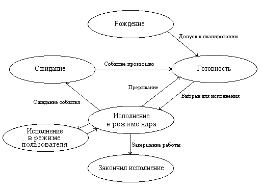

1 Состояния процесса
Введение
Подсистема управления процессами планирует выполнение процессов, то есть распределяет процессорное время между несколькими одновременно существующими в системе процессами, а также занимается созданием и уничтожением процессов, обеспечивает процессы необходимыми системными ресурсами, поддерживает взаимодействие между процессами.
Состояния процесса
В многозадачной (многопроцессной) системе процесс может находиться в одном из нескольких состояний (на примере ОС Unix):
- Рождение - процесс обретает управляющие структуры (дескриптор, контекст), записи о нём вносятся в структуры ядра.
- Готовность к выполнению - процесс обладает всеми ресурсами кроме доступа к процессору (состояние ''низкого старта'').
- Выполнение в режиме ядра - процесс выполняет системный вызов и ядро в привилегированном режиме обрабатывает его.
- Выполнение в режиме пользователя (задачи) - основной режим выполнения команд процесса.
- Ожидание - выполнение процесса заблокировано и он переводится в состояние ожидания.
- Завершение - у процесса отнимаются все ресурсы и он уничтожается.
Для ОС Unix есть ещё одно интересное состояние процесса - зомби, когда он уже не жив и ещё не мёртв.
При завершении процесса должна удаляться его структура из списка процессов. Иногда процесс уже завершился, но его имя еще не удалено из списка процессов. В этом случае процесс становится зомби - его уже нет, но мы его видим в диспетчере задач. Такое может произойти, если процесс-потомок (дочерний процесс) завершился раньше, чем этого ожидал процесс-родитель.
2 Создание процессов
2.1 В Unix
Создание процесса
Создать процесс — это прежде всего означает создать описатель процесса, в качестве которого выступает одна или несколько информационных структур, содержащих все сведения о процессе,, необходимые операционной системе для управления им. В число таких сведений могут входить, например, идентификатор процесса, данные о расположении в памяти исполняемого модуля, степень привилегированности процесса (приоритет и права доступа) и т.п.
Создание процесса включает загрузку кодов и данных исполняемой программы данного процесса с диска в оперативную память. Для этого ОС должна обнаружить местоположение такой программы на диске, перераспределить оперативную память и выделить память исполняемой программе нового процесса. Затем необходимо считать программу в выделенные для нее участки памяти и, возможно, изменить параметры программы в зависимости от размещения в памяти
В многопоточной системе при создании процесса ОС создает для каждого процесса как минимум один поток выполнения. При создании потока так же, как и при создании процесса, операционная система генерирует специальную информационную структуру — описатель потока, который содержит идентификатор потока, данные о правах доступа и приоритете, о состоянии потока и другую информацию.
В разных ОС по-разному строятся отношения между потоками-потомками и их родителями. Например, в одних ОС выполнение родительского потока синхронизируется с его потомками, в частности после завершения родительского потока ОС может снимать с выполнения всех его потомков. В других системах потоки-потомки могут выполняться асинхронно по отношению к родительскому потоку. Потомки, как правило, наследуют многие свойства родительских потоков. Во многих системах порождение потомков является основным механизмом создания процессов и потоков.
Рассмотрим в качестве примера создание процессов в операционной системы UNIX System V. В рассматриваемой версии этой системы потоки не поддерживаются, в качестве единицы управления и единицы потребления ресурсов выступает процесс.
При управлении процессами операционная система использует два основных типа информационных структур: дескриптор процесса и контекст процесса. Дескриптор процесса содержит такую информацию о процессе, которая необходима ядру в течение всего жизненного цикла процесса независимо от того, находится он в активном или пассивном состоянии, находится образ процесса в оперативной памяти или выгружен на диск. (Образом процесса называется совокупность его кодов и данных.)
Дескрипторы отдельных процессов объединены в список, образующий таблицу процессов. Память для таблицы процессов отводится динамически в области ядра. На основании информации, содержащейся в таблице процессов, операционная система осуществляет планирование и синхронизацию процессов. В дескрипторе прямо или косвенно (через указатели, на связанные с процессом структуры) содержится информация о состоянии процесса, о расположении образа процесса в оперативной памяти и на диске, о значении отдельных составляющих приоритета, а также о его итоговом значении — глобальном приоритете, об идентификаторе пользователя, создавшего процесс, о родственных процессах, о событиях, осуществления которых ожидает данный процесс, и некоторая другая информация.
Контекст процесса содержит менее оперативную, но более объемную часть информации о процессе, необходимую для возобновления выполнения процесса с прерванного места:
- содержимое регистров процессора,
- коды ошибок выполняемых процессором системных вызовов,
- информация обо всех открытых данным процессом файлах
- незавершенных операциях ввода-вывода
- другие данные, характеризующие состояние вычислительной среды в момент прерывания.
Контекст, так же как и дескриптор процесса, доступен только программам ядра, то есть находится в виртуальном адресном пространстве операционной системы, однако он хранится не в области ядра, а непосредственно примыкает к образу процесса и перемещается вместе с ним, если это необходимо, из оперативной памяти на диск.
Порождение процессов в системе UNIX происходит в результате выполнения системного вызова fork. ОС строит образ порожденного процесса являющийся точной копией образа породившего процесса, то есть дублируются дескриптор, контекст и образ процесса. Сегмент данных и сегмент стека родительского процесса копируются на новое место, образуя сегменты данных и стека процесса-потомка.
После выполнения системного вызова fork оба процесса продолжают выполнение с одной и той же точки. Чтобы процесс мог опознать, является он родительским процессом или процессом-потомком, системный вызов fork возвращает в качестве своего значения в породивший процесс идентификатор порожденного процесса, а в порожденный процесс — NULL. Типичное разветвление на языке С записывается так:
if( -fork() ) { действия родительского процесса }
else { действия порожденного процесса }
Идентификатор потомка может быть присвоен переменной, входящей в контекст родительского процесса. Так как контекст процесса наследуется его потомками, то потомки могут узнать идентификаторы своих «старших братьев», таким образом сумма знаний наследуется при порождении и может быть распространена между родственными процессами. На независимости идентификатора процесса от выполняемой процессом программы построен механизм, позволяющий процессу перейти к выполнению другой программы с помощью системного вызова ехес.
Таким образом, в UNIX порождение нового процесса происходит в два этапа — сначала создается копия процесса-родителя, затем у нового процесса производится замена кодового сегмента на заданный.
Вновь созданному процессу операционная система присваивает целочисленный идентификатор, уникальный на весь период функционирования системы.
#include <stdlib.h>
#include <sys/wait.h>
#include <fcntl.h>
#include <unistd.h>
#include <stddef.h>
#include <signal.h>
#include <stdio.h>
int main()
{
int pid;
printf("Старт программы\n");
pid=fork();
switch(pid)
{
case -1: perror("fork");
break;
case 0:
printf("\nСоздан дочерний процесс\n");
// код дочернего процесса...
printf("\nЗавершён дочерний процесс\n");
return 0;
default:
// код родительского процесса...
printf("\n'Отец' завершён\n");
exit(0);
}
return 0;
}
В приведённом примере после вызова fork анализируется возвращаемое этой функции значение. Если оно равняется 0, то это значит что мы выполняем дочерний процесс, если положительное число (PID потомка), то мы находимся внутри родительского процесса.
Когда потомок вызывает exit(), код возврата передается родителю, который ждет его, вызвав wait(). WEXITSTATUS() представляет собой макрос, который получает фактический код возврата потомка из вызова wait().
Функция wait() ждет завершения первого из всех возможных потомков родительского процесса. Иногда необходимо точно определить, какой из потомков должен завершиться. Для этого используется вызов waitpid() с соответствующим PID потомка в качестве аргумента.
Задачей системного вызова exec является замена текущего процесса на новый процесс. Как только вы вызываете exec, текущий процесс завершается и начинается новый. Если вы хотите создать отдельный процесс, сначала вы должны вызвать fork, затем вызвать exec для новой программы в дочернем процессе.
#include <sys/types.h>
#include <stdio.h>
#include <unistd.h>
int main()
{
char pid[255];
fork();
fork();
fork();
sprintf(pid, "PID : %d\n",getpid());
write(STDOUT_FILENO, pid, strlen(pid));
exit(0);
}
В рассматриваемом случае будет создано семь процессов-потомков. Первый вызов fork() создает первого потомка. Как указано выше, процесс наследует положение указателя команд от родительского процесса. Указатель команд содержит адрес следующего оператора программы. Это значит, что после первого вызова fork(), указатель команд и родителя, и потомка находится перед вторым вызовом fork().После второго вызова fork() и родитель, и первый потомок производят потомков второго поколения - всего процессов становится 4. После третьего вызова fork() каждый процесс производит своего потомка, увеличивая общее число процессов до 8.
Процессы - зомби возникают, если потомок завершился, а родительский процесс не вызвал wait(). Для завершения процессы используют либо оператор возврата, либо вызов функции exit() со значением, которое будет возвращено операционной системе. Операционная система оставляет процесс зарегистрированным в своей внутренней таблице данных, пока родительский процесс не получит кода возврата потомка, либо не закончится сам. В случае процесса-зомби его код возврата не передается родителю и запись об этом процессе не удаляется из таблицы процессов операционной системы. При дальнейшей работе и появлении новых зомби таблица процессов может быть заполнена, что приведет к невозможности создания новых процессов.
2.2 В Windows
Создание процесса
Создание Win32 процесса осуществляется вызовом одной из таких функций, как CreateProcess, CreateProcessAsUser (для Win NT/2000) и CreateProcessWithLogonW (начиная с Win2000) и происходит в несколько этапов:
- Открывается файл образа (EXE), который будет выполняться в процессе. Если исполняемый файл не является Win32 приложением, то ищется образ поддержки (support image) для запуска этой программы. Например, если исполняется файл с расширением .bat, запускается cmd.exe и т.п.
- В WinNT/2000 для отладки программ реализовано следующее. CreateProcess, найдя исполняемый Win32 файл, ищет в SOFTWARE\Microsoft\Windows NT\CurrentVersion\Image File Execution Option раздел с именем и расширением запускаемого файла, затем ищет в нем параметр Debugger, и если строка не пуста, запускает то, что в ней написано вместо данной программы.
- Создается объект Win32 "процесс".
- Создается первичный поток (стек, контекст и объект "поток").
- Подсистема Win32 уведомляется о создании нового процесса и потока.
- Начинается выполнение первичного потока.
- В контексте нового процесса и потока инициализируется адресное пространство (например, загружаются требуемые DLL) и начинается выполнение программы.
Пример создания программы ''Калькулятор''
#include <windows.h>
int main(int argc, char* argv[])
{
STARTUPINFO si;
PROCESS_INFORMATION pi;
ZeroMemory( &si, sizeof(si) );
si.cb = sizeof(si);
ZeroMemory( &pi, sizeof(pi) );
if( !CreateProcess( NULL, "c:/windows/system32/calc.exe", NULL, NULL, FALSE,
0, NULL, NULL, &si, &pi))
return 0;
// Close process and thread handles.
CloseHandle( pi.hProcess );
CloseHandle( pi.hThread );
return 0;
}
При создании проекта в MS Visual C++ необходимо убедиться, что в настройках проекта выбрана опция Character set=Not set.
3 Создание потоков
Создание потока
Рассмотрим создание нескольких потоков в Windows. Сначала небольшой пример, в котором родительский процесс main порождает поток с помощью метода CreateThread и передаёт ему для выполнения функцию ThreadFunc
#include <windows.h>
#include <conio.h>
DWORD WINAPI ThreadFunc(LPVOID lpParam)
{
char szMsg[80];
wsprintf(szMsg, "Parameter = %d", *(DWORD*)lpParam);
MessageBox( NULL, szMsg, " ThreadFunc", MB_OK );
return 0;
}
VOID main( VOID )
{
DWORD dwThreadId, dwThrdParam = 1;
HANDLE hThread;
char szMsg[80];
hThread = CreateThread(
NULL, // атрибуты безопасности по умолчанию
0, // размер стека используется по умолчанию
ThreadFunc, // функция потока
&dwThrdParam, // аргумент функции потока
0, // флажки создания используются по умолчанию
&dwThreadId); // возвращает идентификатор потока
// При успешном завершении проверяет возвращаемое значение.
if (hThread == NULL)
{
wsprintf( szMsg, "CreateThread failed." );
MessageBox( NULL, szMsg, "main", MB_OK );
}
else
{
_getch();
CloseHandle( hThread );
}
}
Рассмотрим программу, создающую несколько потоков, каждый из которых сортирует массив целых чисел с помощью своего метода сортировки.
#include <windows.h>
#include <conio.h>
#include <time.h>
#include <stdlib.h>
#include <iostream>
using namespace std;
// размер сортируемых массивов
const int N=65536;
// обмен значений двух переменных
void swap(int *A, int *B)
{
int T=*A;
*A=*B;
*B=T;
}
// реализация сортировки пузырьком
void BubbleSort(int *a, int N)
{
int i,j;
for(i=0;i<N-1;i++)
for(j=N-1;j>i;j--)
if(a[j-1]>a[j])
swap(&a[j-1],&a[j]);
}
// реализация сортировки выбором
void SelectionSort(int *a, int N)
{
int i,j,index;
for(i=0;i<N-1;i++)
{
index=i;
for(j=i+1;j<N;j++)
if(a[j]<a[index])
index=j;
swap(&a[i],&a[index]);
}
}
// реализация сортировки вставками
void InsertionSort(int *a, int N)
{
int i,j;
int temp;
for(i=1;i<N;i++)
{
j=i;
temp=a[i];
while(j>0 && temp<a[j-1])
{
a[j]=a[j-1];
j--;
}
a[j]=temp;
}
}
// реализация быстрой сортировки
void QuickSort(int* a, int p, int r)
{
int i,j;
int x;
i=p;
j=r;
x=a[(i+j)/2];
do
{
while(a[i]<x) i++;
while(a[j]>x) j--;
if(i<=j)
{
swap(&a[i],&a[j]);
i++;
j--;
}
}
while(i<=j);
if(j>p)
QuickSort(a,p,j);
if(i<r)
QuickSort(a,i,r);
}
// функция для вызова быстрой сортировки
DWORD WINAPI ThreadFuncQuick(LPVOID lpParam)
{
int *arr=new int[N];
for(int i=0;i<N;i++)
arr[i]=rand()%100;
QuickSort(arr,0,N-1);
cout<<"Quick"<<endl;
cout.flush();
return 0;
}
// функция для вызова сортировки вставками
DWORD WINAPI ThreadFuncInsertion(LPVOID lpParam)
{
int *arr=new int[N];
for(int i=0;i<N;i++)
arr[i]=rand()%100;
InsertionSort(arr,N);
cout<<"Insertion"<<endl;
cout.flush();
return 0;
}
VOID main( VOID )
{
srand(time(0));
DWORD dwThreadId, dwThrdParam = 1;
HANDLE hThread1,hThread2;
char szMsg[80];
hThread1 = CreateThread(
NULL, // атрибуты безопасности по умолчанию
0, // размер стека используется по умолчанию
ThreadFuncQuick, // функция потока
&dwThrdParam, // аргумент функции потока
0, // флажки создания используются по умолчанию
&dwThreadId); // возвращает идентификатор потока
// При успешном завершении проверяет возвращаемое значение.
hThread2 = CreateThread(
NULL, // атрибуты безопасности по умолчанию
0, // размер стека используется по умолчанию
ThreadFuncInsertion, // функция потока
&dwThrdParam, // аргумент функции потока
0, // флажки создания используются по умолчанию
&dwThreadId); // возвращает идентификатор потока
// При успешном завершении проверяет возвращаемое значение.
if (hThread1 == NULL || hThread2 == NULL)
{
wsprintf( szMsg, "CreateThread failed." );
MessageBox( NULL, szMsg, "main", MB_OK );
}
else
{
int *arr=new int[N];
for(int i=0;i<N;i++)
arr[i]=rand()%100;
SelectionSort(arr,N);
cout<<"Selection"<<endl;
cout.flush();
_getch();
CloseHandle( hThread1 );
CloseHandle( hThread2 );
}
}